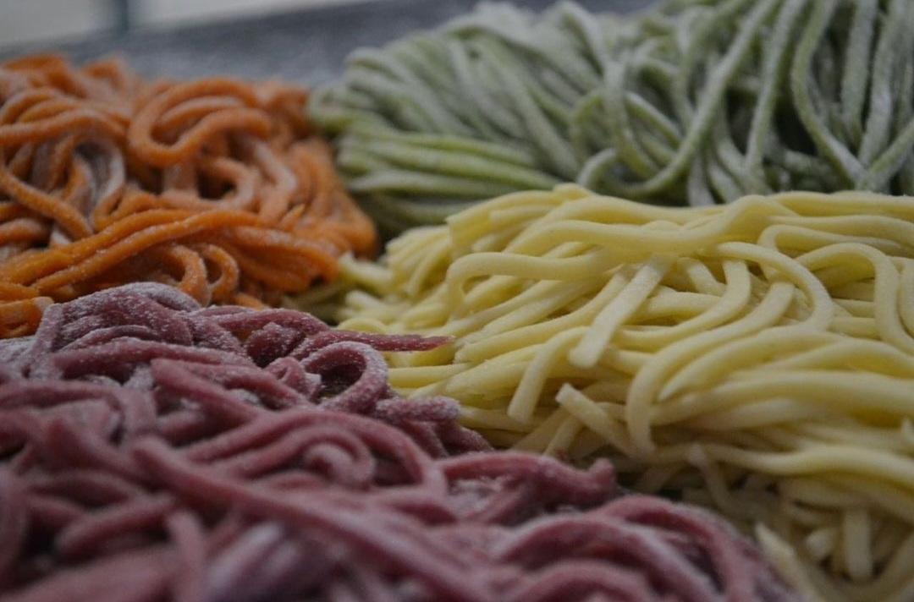
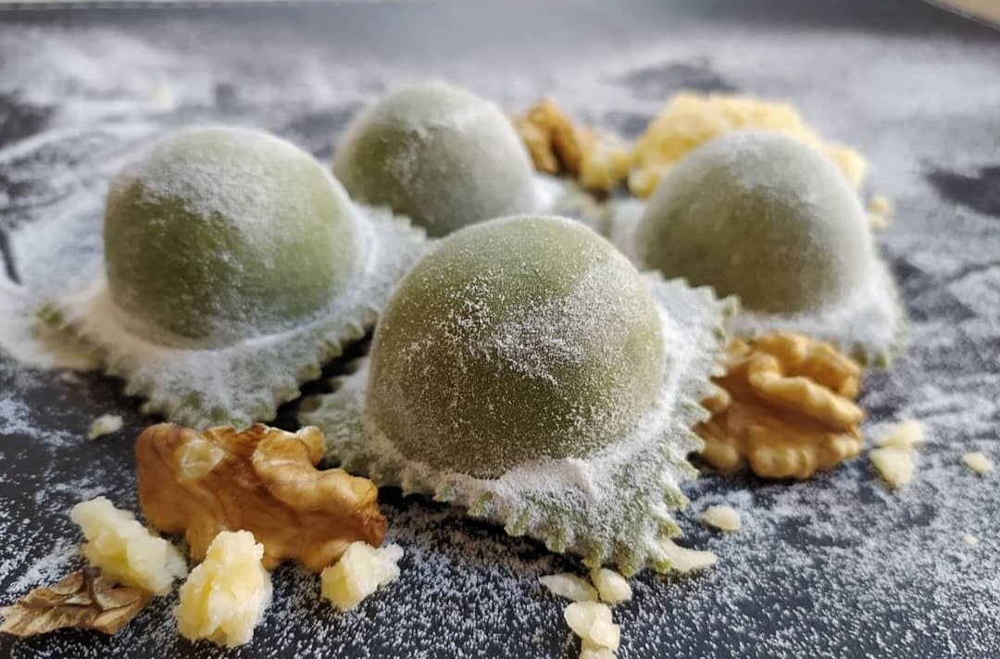

¡Aprende con nosotros a darle un estilo único a tus pastas!

Proximamente

Proximamente

Proximamente
Fideos al huevo

Ingredientes
- 400 g de harina 0000
- 4 huevos
- 1 cucharada de aceite de oliva
- 1 atado de brócoli
- 2 dientes de ajo
- 1 peperoncino
- Sal gruesa, agusto
Preparación
- Sobre la mesada realizar una corona con la harina. En el centro, incorporar 4 huevos enteros y 4 cucharadas soperas de agua.
- Incorporar y comenzar a amasar. Formar una masa lisa y homogénea. Dejar descansar tapada a temperatura ambiente.
- Estirar con máquina de pasta o palote de 1 a 2 milímetros de espesor y cortar con la máquina o a cuchillo. Dejar orear la pasta.
- Cocinar en abundante agua hirviendo con sal.
- Salsa: calentar aceite de oliva en una sartén con ajo en láminas y ají peperoncino . Antes que el ajo se queme agregar brócolis cocidos , luego la pasta y cocinar un minuto más.
Recomendación
Podés mezclar con unos tomates secos hidratados y albahaca, agregando un poco del agua de cocción, sin necesidad de hacer una pasta
muy elaborada y ya tenes unos fideos caseros exquisitos. Acordate de ponerle bastante sal al agua de cocción y nada de aceite.
Echá las pastas cuando ya rompió el punto de hervor.
Lasagna

Ingredientes
- 600 g carne de ternera para guisar
- 300 g panceta de cerdo
- 1 cebolla
- 2 zanahorias
- 1 rama de apio
- 200ml vino tinto
- 800 g tomates pelados o salsa de tomate
- 50 ml de leche
- 3 cda de aceite de oliva
- Sal a gusto
- Pimienta negra molida a gusto
Pasta para Lasagna
- 200 g harina comun
- 2 huevos
- 1-2 cda aceite de oliva
- 1 pizca de sal
Bechamel
- 80 g mantequilla
- 80 g harina comun
- 75ml leche
- Nuez moscada al gusto
- Sal a gusto
- Pimienta negra al gusto
- 200 g queso parmesano
Elaboración paso a paso
- Cortamos la panceta en cuadraditos pequeños. Pero primero quitamos la piel porque es muy dura.
- Ponemos la panceta a fuego medio para que se vaya haciendo despacio.
- Mientras tanto cortamos las verduras en cuadrados pequeños.
- ¡No olvidemos remover la panceta!
- Añadimos a la sarten con la panceta un chorro de aceite. A ser posible el de oliva.
- Añadimos las verduras.
- Añadimos 1 pizca de sal.
- A fuego medio bajo, cocinamos hasta que la cebolla, la zanahoria y el apio se ablanden.
- Añadimos la carne de ternera
- Ponemos el fuego medio alto y removemos muy bien.
- Una vez la carne haya cambiado de color añadimos 1 vaso de vino tinto.
- Cocinamos hasta que se evapore el alcohol.
- Añadimos salsa de tomate o tomates troceados. Podes utilizar la salsa de tomate que mas te guste.
- Una vez que la salsa haya empezado a hervir ponemos el fuego bajo y ponemos la tapa dejando un hueco para que salga el vapor.
- La salsa hay que cocerla de 2 a 4hs. Con mucha calma. Si ves que esta quedando seca, añade un poco de agua o de caldo.
- Salpimenta a tu gusto
- Añade leche para equilibrar la acidez.
- La salsa esta lista.
Pasta Casera
- Tamiza en un recipiente 200g de harina.
- Añade 1 pizca de sal.
- Casca 2 huevos grandes.
- Añade 1 chorro de aceite de oliva.
- Revuelve bien.
- Termina de hacer la bola con la mano.
- Esta masa no hay que amazarla mucho. Solo integrar bien todos los ingredientes.
- La tapamos y la dejamos en reposo unos 20min.
- Antes de pasar la masa por la maquina la estiramos un poco con rodillo.
- El grosor de la pasta ideal es cuando empieza a transparentarse un poco.
- Corta las láminas en tamaño 10x12 cm.
- En abundante agua con sal cocemos la pasta. Cocerlas en dos tantas evitara que se peguen.
- Cocemos la pasta aprox. 1min
- La enjuagamos en agua fria.
- La colocamos sobre un paño para que se seque.
Bechamel
- Para hace la bechamel derrite la mantequilla.
- Añade la harina.
- Rehoga la harina 2-3 minutos a fuego medio.
- Añade la leche fria y haz el fuego alto.
- Remueve muy bien. En la leche fria la harina se siluye muy bien.
- Remover hasta que espese.
- En cuanto rompa a hervir hacemos el fuego medio y la cocemos 2-3 minutos mas.
- Retiramos la bechamel del fuego.
- Condimentamos. Añadimos 1 pizca de nuez moscada.
- Sal.
- Un poco de pimienta negra molida.
- Lo cubrimos con un film transparente para que no se forme una costra negra.
- Rallamos el parmesano o parmigiano.
- Precalienta el horno a 180°C Ó 360°F con calor de arriba y abajo.
- Unta el molde o la fuente con la mantequilla.
- Cubre el fondo con la bechamel
- Coloca por encima una capa de pasta.
- Por encima de la pasta va el ragú o salsa de carne.
- Rocia el ragú con un poco de bechamel.
- Espolvorea con parmigiano.
- Vamos llenando con capas hasta llenar el molde.
- La última capa cubrimos generosamente con bechamel y espolvoreamos generosamente con queso.
- Horneamos la lasagna 45 minutos, los ultimos 5 minutos con grill a 250°C.
- Antes de servir hay que reposarla 10-15 minutos.